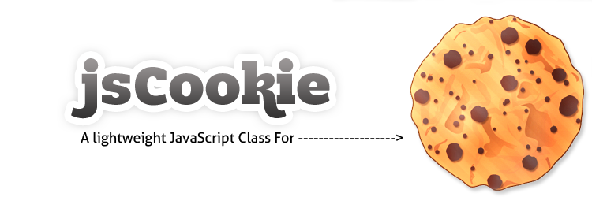

Documentation

jsCookie-1.4:
is a simple, fast JavaScript class that will help you handle cookies the easy way!
jsCookie is designed to change the way you handle JavaScript Cookies.
Table of Contents:
1) Add jsCookie:
You will need to copy the "jsCookie-1.4.min.js" file(from the zip file you downloaded)
into your server.
(Remember where you uploaded it to, i.e. the path on the server)
2) Include jsCookie into your html file:
Just copy this code into your html file and paste it before the </head>
tag or the </body> tag.
Like so:
3) Call jsCookie
In the script tag where you want to use jsCookie, add the following lines:
(before using the jsCookie functions, otherwise it will not have time to load)
4) Start coding!
Now you can start using jsCookie in your project!
Scroll down to see all the jsCookie functions you can use...
I know that jsCookie is good for anything regarding cookies.
Yet,
I highly recommend on using a browser extension when working with cookies.
It will accelerate your development time.
I suggest the following addons for chrome & firefox:
-Chrome:Edit This Cookie
-FireFox(& ie):Cookie Manager
Functions:
.enabled()
The enabled function is used for checking the availability of cookies on the client's
browser.
The function returns true if cookies are enabled, and false when cookies are
not enabled.
* This function can run offline.
* OnSuccess: true, OnFailure: false
Example:
.create()
The create function creates a cookie.
In case of failure the function will return false.
* @param {string/int} value - name of cookie, ***Required***
* @param {array/int}[Days, Hours, Minutes, Seconds] expire - time for cookie to expire
* @param {string} path - location of cookie on the server to be active
* @param {string} domain - domain connected to cookie
* @param {string/bool} secure - send the cookie over SSL connections only
*
* OnSuccess: none, OnFailure: false
Example:
This example creates a cookie in the current directory which it was called from. It expires after 1 hour.
This example will create an updatable(.update) cookie:
Creating a cookie with a path can be ignored,
if the path of the cookie is created on - is not included in the path parameter.
.set()
This quickly creates a session cookie which exists only while the browser window remains open.
(No other options, only name and value)
In case of failure the function will return false.
* @param {string} value - value of cookie on the server, ***Required***
* OnSuccess: none, OnFailure: none
Example:
.read()
The read function returns the value of the specified cookie.
It will return false if no cookie was found.
* OnSuccess: {string}value of cookie, OnFailure: false
Example:
.readByValue()
The readByValue function returns the name of the cookie's value that was specified.
It will return false if no cookie was found.
* OnSuccess: {string}name of cookie, OnFailure: false
Example:
.remove()
The remove function deletes a cookie by its name.
* @param {string} path - location of cookie on the server
* @param {string} domain - location of cookie on the server
* OnSuccess: none, OnFailure: false
Example:
.removeByValue()
The removeByValue function deletes a cookie by its value.
* @param {string} path - location of cookie on the server
* @param {string} domain - location of cookie on the server
* OnSuccess: none, OnFailure: false
Example:
.removeAll()
The removeAll function deletes all the cookies (only those in the current path).
* OnSuccess: returns array, OnFailure/No records: false
Example:
.count()
Returns the number of cookies on the page.
* OnSuccess: returns int (number of cookies), OnFailure/No records: none
Example:
.getNames()
The getNames function returns all the cookies' names in the current page.
* OnSuccess: returns array, OnFailure/No records: false
Example:
.getValues()
The getValues function returns all the cookie values in the current page.
* OnSuccess: returns array, OnFailure/No records: false
Example:
.getAsArray()
The getAsArray function returns cookies and their data as an array (string) or as an array(object literal).
(in the current page).
* OnSuccess: returns array, OnFailure: false
Or: (object literal) -
.update()
Update a cookie while keeping its initial values (expire, path, domain, secure).
Date parameter can be changed.
Update method will only work with cookies that have the "updatable" flag (as true).
Cookie name is presistant.
* @param {string} newValue - new value for the cookie, ***Required***
* @param {string} newDate - update cookie with a new date of expiration, ***Required***
OR:
* @param {string} keepDate - keep the current expiration date, ***Required***
* OnSuccess: none, OnFailure: false
Example:
Or:
.appendValue()
Appends a value to already existing cookie.
* @param {string} addValue - appended value, ***Required***
* @param {string} updatable - keep cookie settings (updatable cookie) ***Required***
Or:
* @param {array/int} expire - optional - set expire date, if the cookie isn't updatable ***Required***
* OnSuccess: none, OnFailure: false
Example:
.getSettings()
Get an updatable cookie's settings.
* Return values: array of strings - [0 = expire, 1 = path, 2 = domain, 3 = secure]
* OnSuccess: {string/arr}, OnFailure: false
Example:
.getNamesByValue()
Get names array of cookies by their common value
* Return values: array of strings (names)
* OnSuccess: {string/arr}, OnFailure: false
Example:
Questions:
1) How do I update / change a value or expire time of a cookie?Answer (1):
Just insert the name of a cookie that was already created,
and jsCookie will update that cookie with what you entered.
(Version 1.3) - Use the update() function:
(Remember the last bool parameter - the updatable flag)
Update function:
2) What can I do with the ".getAsArray()" function?
Answer (2):
It's simple.
If you want to manipulate the cookie objects in an array manner,
this is the tool for you.
If you want, for example, to do something with all the cookies and you need them separated,
use this function.(change all the cookies value's)
3) I want to hash my cookie so it will be protected, how can I do so?
Answer (3):
As you know jsCookie runs within, JavaScript,
JavaScript is a client-side programming language.
This means that all the code that you write is easily viewed in the client's browser.
Thus, if I would have written a hash algorithm to secure your cookies they would
actually not be that secure,
for the obvious reason that users could read and understand my code and probably
break it and "hack" your cookies.
To work something out I would recommend using a server-side solution by
creating your cookies in a server-side programming language.
In this way you could create and hash your cookies in a more secure way.
4) I want to add my own function to jsCookie, how can I do so?
Answer (4):
You can do so by writing something like this into jsCookie-1.4.js:
I would also recommend using an online solution for minifying the code.
(DO NOT RESELL EVEN IF THE CODE WAS CHANGED) - Unless you bought the Extended Licence
5) If I don't specify the expire time in the .create() function, when will it expire?
Answer (5):
The cookie will expire just like the cookie created with the set function (session cookie),
they will expire when the client exits the browser.
6) I have a suggestion/bug report I want to inform you about,
where can I contact you?
Answer (6):
It's super easy to contact me,
send me an email to:agam.more at gmail.com
Or click on the blue sign on the left corner of
the page, it will take you to my codecanyon page.
7) I have x cookies on a page but the .count() function
retuns y cookies insted, why?
Answer (7):
This happens because those cookies that were not counted (or read etc...), they were possibly created by the server-side(php,asp.net...),
Or have a different path/domain (than the code execution one's).
Therefore jsCookie cannot read them.
8) When I use the .remove or .removeAll function, it does not delete all of my cookies, why?
Answer (8):
This happens because those cookies that were not deleted were created with the spesification of a domain or path.
Therefore the remove function cannot remove them.
A quick solution for that is:
Replace the capital words to the cookie's properies.
9) Problems or lack of understanding of .create() function properties:
Answer (9):
I will explain how to use them correctly:
To activate the cookie only at a particular path:
Cookie will work in a particular domain:
Cookie will be activated over SSL connections only:
For Example, show a popup only for the first time:
Answer (10):
One client has already asked this question.
So I decided to attach the file to jsCookie-1.4.js
Take a look in:
jsCookie-folder/Dev/popupExample.html
Notes:
1) In the create function do not enter the semi colon(";") symbol,
the function will return false if inserted.
2) You can only manipulate cookies created by JavaScript - if a cookie was created by the server-side,
then you couldn't manipulate it through JavaScript (an http cookie).
3) For for detail about cookies please visit this web page:
The unofficial cookie FAQ(by David Whalen)
4)jsCookie code will not run offline IN GOOGLE CHROME, because cookies need a server to be created.
5) If you are using the updatable flag, don't or use the following as a value/name: "_jscUpt_".